Publications
[Google Scholar]
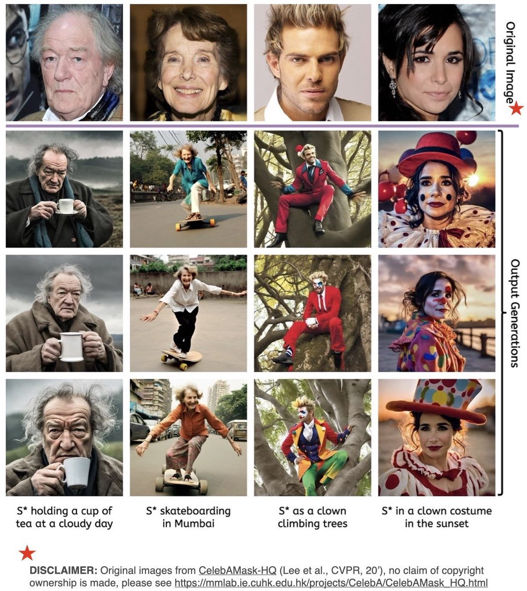
Abstract
In this work, we systematically study the problem of personalized text-to-image generation, where the output image is expected to portray information about specific human subjects. E.g., generating images of oneself appearing at imaginative places, interacting with various items, or engaging in fictional activities. To this end, we focus on text-to-image systems that input a single image of an individual to ground the generation process along with text describing the desired visual context. Our first contribution is to fill the literature gap by curating high-quality, appropriate data for this task. Namely, we introduce a standardized dataset (Stellar) that contains personalized prompts coupled with images of individuals that is an order of magnitude larger than existing relevant datasets and where rich semantic ground-truth annotations are readily available. Having established Stellar to promote cross-systems fine-grained comparisons further, we introduce a rigorous ensemble of specialized metrics that highlight and disentangle fundamental properties such systems should obey. Besides being intuitive, our new metrics correlate significantly more strongly with human judgment than currently used metrics on this task. Last but not least, drawing inspiration from the recent works of ELITE and SDXL, we derive a simple yet efficient, personalized text-to-image baseline that does not require test-time fine-tuning for each subject and which sets quantitatively and in human trials a new SoTA.
Promptable Game Models: Text-Guided Game Simulation via Masked Difusion Models
Journal Paper
ACM Transactions on Graphics (TOG), 2023
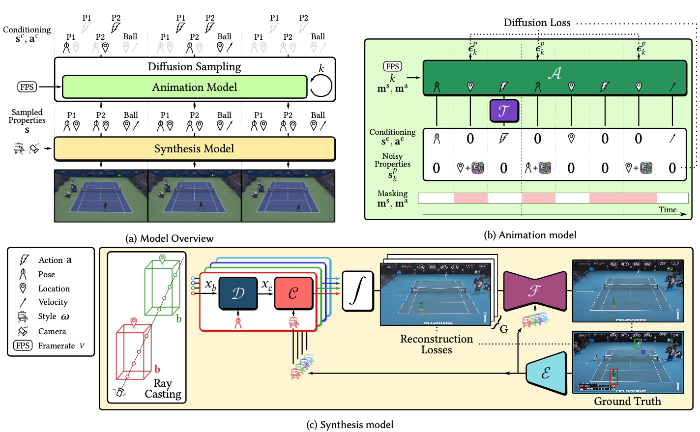
Abstract
Game engines are powerful tools in computer graphics. Their power comes at the immense cost of their development. In this work, we present a framework to train game-engine-like neural models, solely from monocular annotated videos. The result a Learnable Game Engine (LGE)—maintains states of the scene, objects and agents in it, and enables rendering the environment from a controllable viewpoint. Similarly to a game engine, it models the logic of the game and the underlying rules of physics, to make it possible for a user to play the game by specifying both high- and low-level action sequences. Most captivatingly, our LGE unlocks the director's mode, where the game is played by plotting behind the scenes, specifying high-level actions and goals for the agents in the form of language and desired states. This requires learning “game AI”, encapsulated by our animation model, to navigate the scene using high-level constraints, play against an adversary, devise the strategy to win a point. The key to learning such game AI is the exploitation of a large and diverse text corpus, collected in this work, describing detailed actions in a game and used to train our animation model. To render the resulting state of the environment and its agents, we use a compositional NeRF representation used in our synthesis model. To foster future research, we present newly collected, annotated and calibrated large-scale Tennis and Minecraft datasets. Our method significantly outperforms existing neural video game simulators in terms of rendering quality. Besides, our LGEs unlock applications beyond capabilities of the current state of the art. Our framework, data, and models are publicly available.
ScanEnts3D: Exploiting Phrase-to-3D-Object Correspondences for Improved Visio-Linguistic Models in 3D Scenes
Conference PaperWinter Conference on Applications of Computer Vision, 2024, Hawaii.
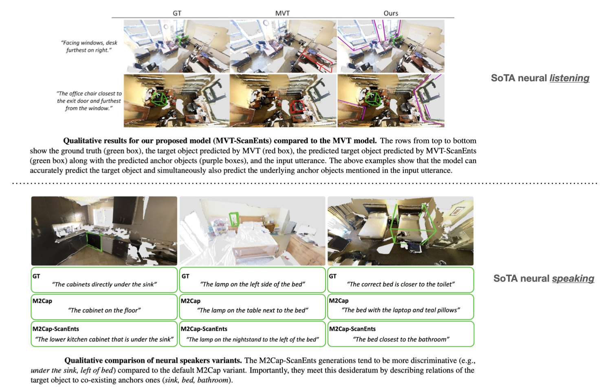
Abstract
The two popular datasets ScanRefer and ReferIt3D connect natural language to real-world 3D data. In this paper, we curate a large-scale and complementary dataset extending both the aforementioned ones by associating all objects mentioned in a referential sentence to their underlying instances inside a 3D scene. Specifically, our Scan Entities in 3D (ScanEnts3D) dataset provides explicit correspondences between 369k objects across 84k natural referential sentences, covering 705 real-world scenes. Crucially, we show that by incorporating intuitive losses that enable learning from this novel dataset, we can significantly improve the performance of several recently introduced neural listening architectures, including improving the SoTA in both the Nr3D and ScanRefer benchmarks by 4.3% and 5.0%, respectively. Moreover, we experiment with competitive baselines and recent methods for the task of language generation and show that, as with neural listeners, 3D neural speakers can also noticeably benefit by training with ScanEnts3D, including improving the SoTA by 13.2 CIDEr points on the Nr3D benchmark. Overall, our carefully conducted experimental studies strongly support the conclusion that, by learning on ScanEnts3D, commonly used visio-linguistic 3D architectures can become more efficient and interpretable in their generalization without needing to provide these newly collected annotations at test time.
Affection: Learning Affective Explanations for Real-World Visual Data
Conference PaperConference on Computer Vision and Pattern Recognition, 2023, Vancouver.
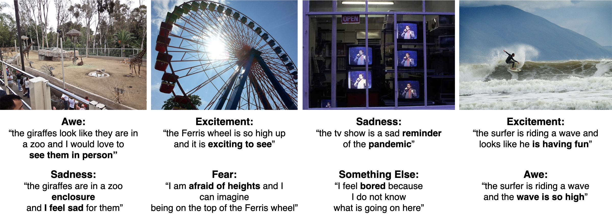
Abstract
Real-world images often convey emotional intent, i.e., the photographer tries to capture and promote an emotionally interesting story. In this work, we explore the emotional reactions that real-world images tend to induce by using natural language as the medium to express the rationale behind an affective response to a given visual stimulus. To embark on this journey, we introduce and share with the research community a large-scale dataset that contains emotional reactions and free-form textual explanations for 85K publicly available images, analyzed by 6,283 annotators who were asked to indicate and explain how and why they felt in a particular way when observing a particular image, producing a total of 526K responses. Even though emotional reactions are subjective and sensitive to context (personal mood, social status, past experiences) – we show that there is significant common ground to capture potentially plausible emotional responses with large support in the subject population. In light of this key observation, we ask the following questions: i) Can we develop multi-modal neural networks that provide reasonable affective responses to real-world visual data, explained with language? ii) Can we steer such methods towards creating explanations with varying degrees of pragmatic language or justifying different emotional reactions while adapting to the underlying visual stimulus? Finally, iii) How can we evaluate the performance of such methods for this novel task? With this work, we take the first steps to partially address all of these questions, thus paving the way for richer, more human-centric, and emotionally-aware image analysis systems.
ShapeTalk: A Language Dataset and Framework for 3D Shape Edits and Deformations
Conference PaperConference on Computer Vision and Pattern Recognition, 2023, Vancouver.
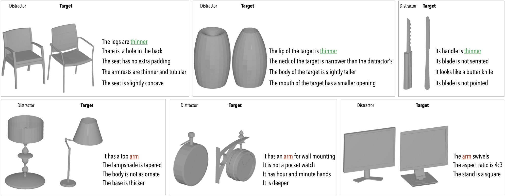
Abstract
Editing 3D geometry is a challenging task requiring specialized skills. In this work, we aim to facilitate the task of editing the geometry of 3D models through the use of natural language. For example, we may want to modify a 3D chair model to “make its legs thinner” or to “open a hole in its back”. To tackle this problem in a manner that promotes open-ended language use and enables fine-grained shape edits, we introduce the most extensive existing corpus of natural language utterances describing shape differences: ShapeTalk. ShapeTalk contains over half a million discriminative utterances produced by contrasting the shapes of common 3D objects for a variety of object classes and degrees of similarity. We also introduce a generic framework, ChangeIt3D, which builds on ShapeTalk and can use an arbitrary 3D generative model of shapes to produce edits that align the output better with the edit or deformation description. Finally, we introduce metrics for the quantitative evaluation of language-assisted shape editing methods that reflect key desiderata within this editing setup. We note that ShapeTalk allows methods to be trained with explicit 3D-to-language data, bypassing the necessity of lifting 2D to 3D using methods like neural rendering, as required by extant 2D image-language foundation models.
LADIS: Language Disentanglement for 3D Shape Editing
Conference PaperFindings of Empirical Methods in Natural Language Processing, 2022, Abu Dhabi.
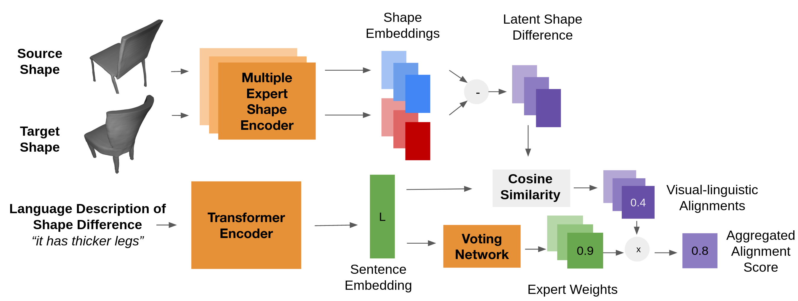
Abstract
Natural language interaction is a promising direction for democratizing 3D shape design. However, existing methods for text-driven 3D shape editing face challenges in producing decoupled, local edits to 3D shapes. We address this problem by learning disentangled latent representations that ground language in 3D geometry. To this end, we propose a complementary tool set including a novel network architecture, a disentanglement loss, and a new editing procedure. Additionally, to measure edit locality, we define a new metric that we call part-wise edit precision. We show that our method outperforms existing SOTA methods by 20% in terms of edit locality, and up to 6.6% in terms of language reference resolution accuracy. Human evaluations additionally show that compared to the existing SOTA, our method produces shape edits that are more local, more semantically accurate, and more visually obvious. Our work suggests that by solely disentangling language representations, downstream 3D shape editing can become more local to relevant parts, even if the model was never given explicit part-based supervision.
Quantized GAN for Complex Music Generation from Dance Videos
Conference Paper European Conference on Computer Vision, 2022, Tel-Aviv.
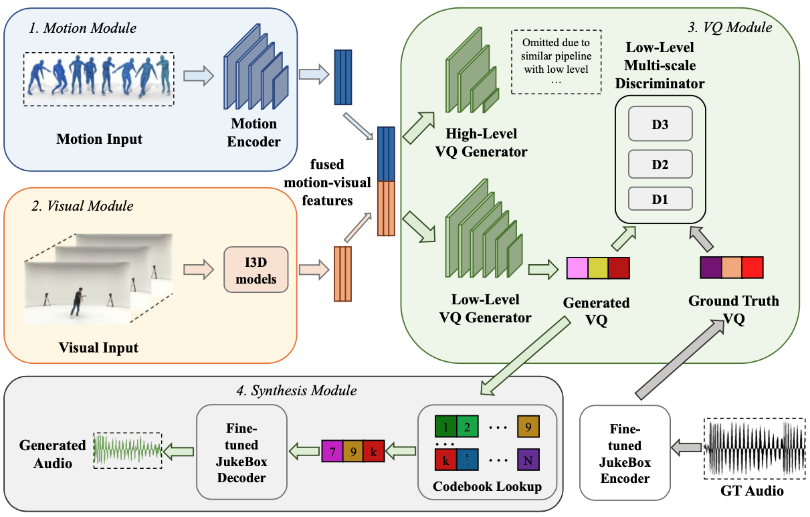
Abstract
We present Dance2Music-GAN (D2M-GAN), a novel adversarial multi-modal framework that generates complex musical samples conditioned on dance videos. Our proposed framework takes dance video frames and human body motion as input, and learns to generate music samples that plausibly accompany the corresponding input. Unlike most existing conditional music generation works that generate specific types of mono-instrumental sounds using symbolic audio representations (e.g., MIDI), and that heavily rely on pre-defined musical synthesizers, in this work we generate dance music in complex styles (e.g., pop, breakdancing, etc.) by employing a Vector Quantized (VQ) audio representation, and leverage both its generality and the high abstraction capacity of its symbolic and continuous counterparts. By performing an extensive set of experiments on multiple datasets, and following a comprehensive evaluation protocol, we assess the generative quality of our approach against several alternatives. The quantitative results, which measure the music consistency, beats correspondence, and music diversity, clearly demonstrate the effectiveness of our proposed method. Last but not least, we curate a challenging dance-music dataset of in-the-wild TikTok videos, which we use to further demonstrate the efficacy of our approach in real-world applications – and which we hope to serve as a starting point for relevant future research.
NeROIC: Neural Object Capture and Rendering from Online Image Collections
Conference Paper SIGGRAPH, 2022, Vancouver.
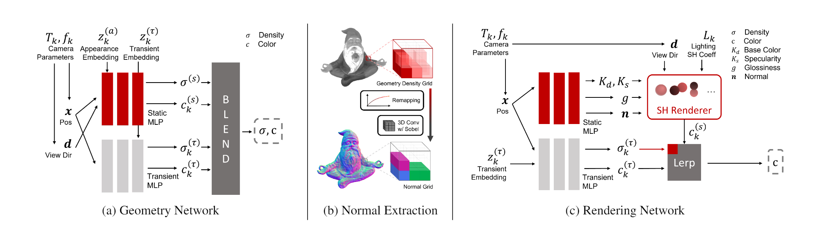
Abstract
We present a novel method to acquire object representations from online image collections, capturing high-quality geometry and material properties of arbitrary objects from photographs with varying cameras, illumination, and backgrounds. This enables various object-centric rendering applications such as novel-view synthesis, relighting, and harmonized background composition from challenging in-the-wild input. Using a multi-stage approach extending neural radiance fields, we first infer the surface geometry and refine the coarsely estimated initial camera parameters, while leveraging coarse foreground object masks to improve the training efficiency and geometry quality. We also introduce a robust normal estimation technique which eliminates the effect of geometric noise while retaining crucial details. Lastly, we extract surface material properties and ambient illumination, represented in spherical harmonics with extensions that handle transient elements, e.g. sharp shadows. The union of these components results in a highly modular and efficient object acquisition framework. Extensive evaluations and comparisons demonstrate the advantages of our approach in capturing high-quality geometry and appearance properties useful for rendering applications.
PartGlot: Learning Shape Part Segmentation from Language Reference Games [Oral]
Conference PaperConference on Computer Vision and Pattern Recognition, 2022, New Orleans.
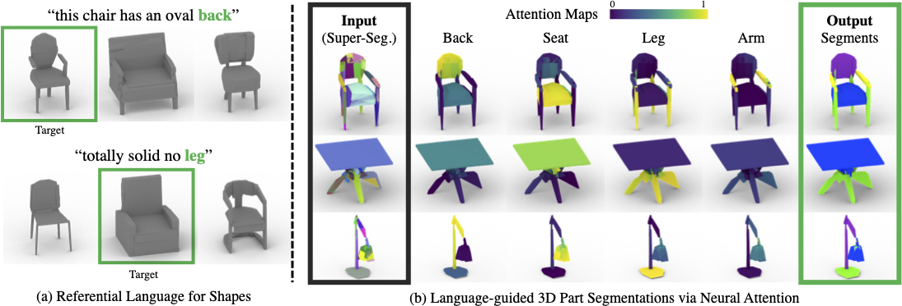
Abstract
We introduce PartGlot, a neural framework and associated architectures for learning semantic part segmentation of 3D shape geometry, based solely on part referential language. We exploit the fact that linguistic descriptions of a shape can provide priors on the shape's parts -- as natural language has evolved to reflect human perception of the compositional structure of objects, essential to their recognition and use. For training we use ShapeGlot's paired geometry / language data collected via a reference game, where a speaker produces an utterance to differentiate a target shape from two distractors and the listener has to find the target based on this utterance. Our network is designed to solve this multi-modal recognition problem, by carefully incorporating a Transformer-based attention module so that the output attention can precisely highlight the semantic part or parts described in the language. Remarkably, the network operates without any direct supervision on the 3D geometry itself. Furthermore, we also demonstrate that the learned part information is generalizable to shape classes unseen during training. Our approach opens the possibility of learning 3D shape parts from language alone, without the need for large-scale part geometry annotations, thus facilitating annotation acquisition.
Learning To Generate and Differentiate 3D Objects Using Geometry & Language
Thesis Ph.D. Thesis, 2021, Stanford.
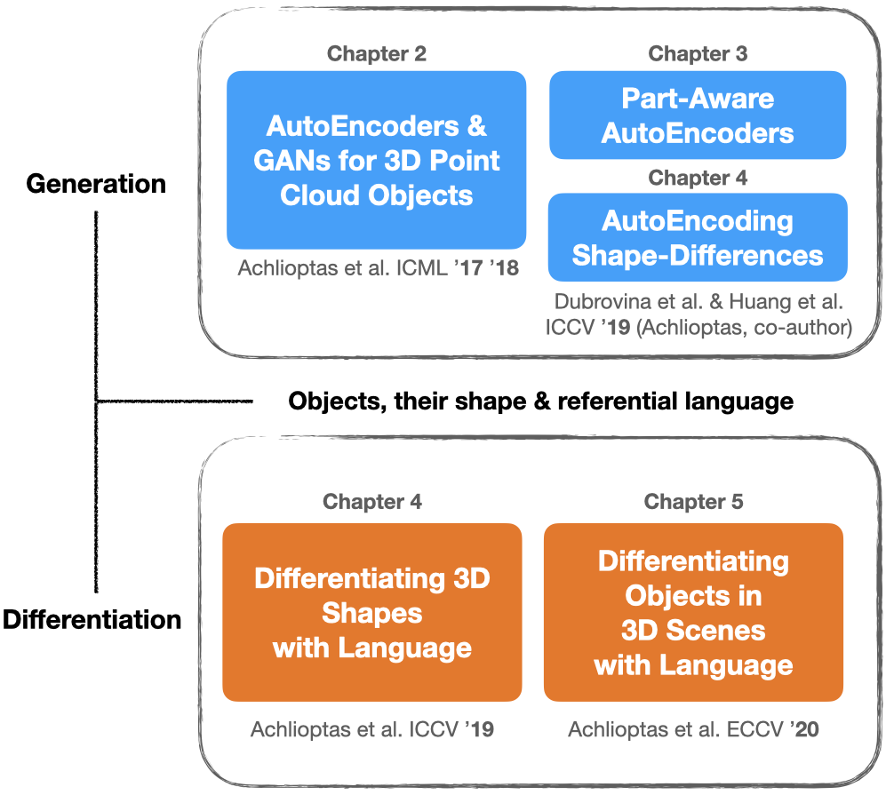
Abstract
The physical world surrounding us is extremely complex, with a myriad of unexplained phenomena that seem at times mysterious or even magical. In our quest to understand, analyze and in the end, improve our interactions with our surroundings, we decompose this complex world into tangible entities we call objects. From Plato's ancient Theory of Forms to the modern rules of Object-Oriented Programming, objects with their associated classes and abstractions, have been a pillar of analysis and philosophy. At the same time, human intelligence flourishes and demonstrates much of its elegance in another human construct: that of natural languages. Humans have developed their languages to enable them to efficiently communicate with each other for almost anything conceivable: from never-seen imaginative scenarios to pragmatic nuisances regarding their surrounding objects.
My vision and motivation behind this thesis lie in bridging (a modest bit) the gap between these two constructs, language and object entities, in modern-day computers via learning algorithms. In this way, this thesis aims at contributing a step forward in the advancement of Artificial Intelligence by introducing to the research community, smarter, latent, and oftentimes multi-modal representations of 3D objects, that enhance their capacity to reason about them, with (or without) the aid of language.
Specifically, this thesis aims at introducing new methods and new problems at the intersection of the computer science sub-fields of 3D Vision and computational Linguistics. It starts and dedicates about half of its contents by establishing several novel (deep) Generative Neural Networks that can generate/reconstruct/represent common three-dimensional objects (e.g., a 3D point cloud of chair). These networks give rise to object representations that can improve some of the machines' objects-oriented analytical capacities: e.g., to better classify the objects of a collection, or generate novel object instances, by combining a priori known object-parts, or by meaningful "latent" interpolations among specified objects. The second half of the thesis, taps on these object representations to introduce new problems and machine learning-based solutions for discriminative object-centric language-comprehension ("listening"), and language-production ("speaking"). In this way, the second half complements and extends the first part of the thesis, by exploring multi-modal, language-aware, object representations that enable a machine to listen or speak about object properties similar to humans.
In summary, the three most salient contributions of this thesis are the following. First, it introduces the first Generative Adversarial Network concerning the shape of everyday objects captured via 3D point clouds and appropriate (and widely adopted) evaluation metrics. Second, it introduces the problem and deep-learning-based solutions, for comprehending or generating linguistic references concerning the shape of common objects, in contrastive contexts i.e., talk about how a chair is different from two similar ones. Last, it explores a less controlled and harder scenario of object-based reference in the wild. Namely, it introduces the problem and methods for language comprehension concerning properties of real-world objects residing inside real-world 3D scenes, e.g., it builds machines that can understand language concerning, say, the texture of an object or its spatial arrangement. During the journey it took to establish these contributions, we published and explored some highly relevant ideas, parts of which will be used to make a more complete exposition. In short, these papers concern two high-level concepts. First, the creation of "latent spaces" that are aware of the part-based structure of 3D objects, e.g., the legs vs.~the back of a chair. Second, the creation of latent spaces that exploit known correspondences among objects of a collection, e.g., dense pointwise mappings, which can enhance the latent representation capacity in capturing geometric- shape-differences among objects. As we show with the primary works presented in this thesis, object-centric referential language contains a significant amount of part-based and fine-grained shape understanding -- naturally calling for a conceptually deep object learning and justifying the ongoing need for the development of many types of Generative Networks to capture it fully.
ArtEmis: Affective Language for Visual Art [Oral]
Conference Paper Conference on Computer Vision and Pattern Recognition, 2021, Virtual.
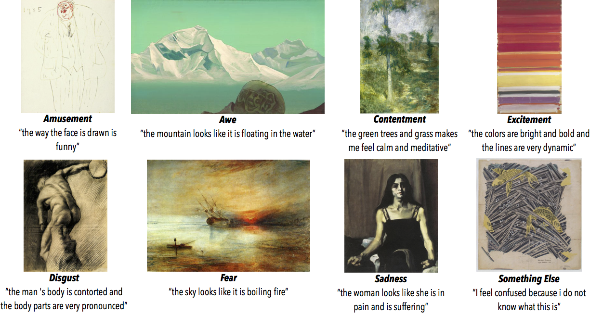
Abstract
We present a novel large-scale dataset and accompanying machine learning models aimed at providing a detailed understanding of the interplay between visual content, its emotional effect, and explanations for the latter in language. In contrast to most existing annotation datasets in computer vision, we focus on the affective experience triggered by visual artworks and ask the annotators to indicate the dominant emotion they feel for a given image and, crucially, to also provide a grounded verbal explanation for their emotion choice. As we demonstrate below, this leads to a rich set of signals for both the objective content and the affective impact of an image, creating associations with abstract concepts (e.g., "freedom" or "love"), or references that go beyond what is directly visible, including visual similes and metaphors, or subjective references to personal experiences. We focus on visual art (e.g., paintings, artistic photographs) as it is a prime example of imagery created to elicit emotional responses from its viewers. Our dataset, termed ArtEmis, contains 455K emotion attributions and explanations from humans, on 80K artworks from WikiArt. Building on this data, we train and demonstrate a series of captioning systems capable of expressing and explaining emotions from visual stimuli. Remarkably, the captions produced by these systems often succeed in reflecting the semantic and abstract content of the image, going well beyond systems trained on existing datasets.
Long Tail Visual Relationship Recognition with Hubless Regularized Relmix
Conference Paper International Conference on Computer Vision, 2021, Virtual.
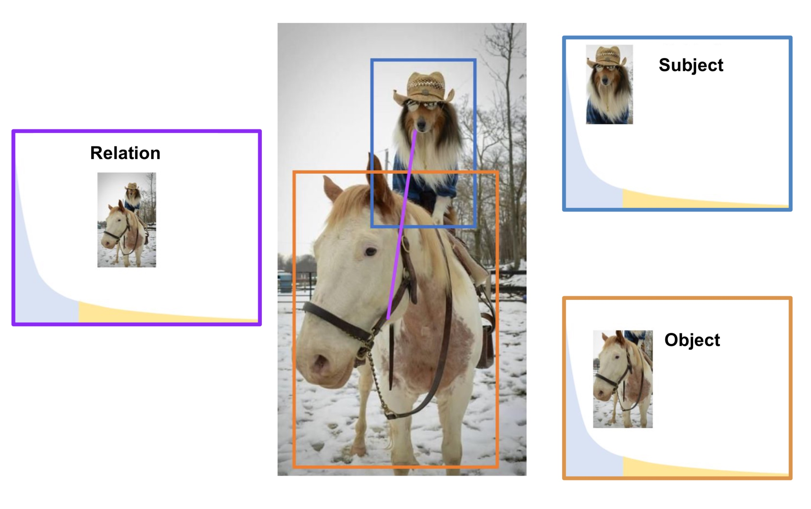
Abstract
Scaling up the vocabulary and complexity of current visual understanding systems is necessary in order to bridge the gap between human and machine visual intelligence. However, a crucial impediment to this end lies in the difficulty of generalizing to data distributions that come from real-world scenarios. Typically such distributions follow Zipf's law which states that only a small portion of the collected object classes will have abundant examples (head); while most classes will contain just a few (tail). In this paper, we propose to study a novel task concerning the generalization of visual relationships that are on the distribution's tail, i.e. we investigate how to help AI systems to better recognize rare relationships like <S:dog, P:riding, O:horse>, where the subject S, predicate P, and/or the object O come from the tail of the corresponding distributions. To achieve this goal, we first introduce two large-scale visual-relationship detection benchmarks built upon the widely used Visual Genome and GQA datasets. We also propose an intuitive evaluation protocol that gives credit to classifiers who prefer concepts that are semantically close to the ground truth class according to wordNet- or word2vec-induced metrics. Finally, we introduce a visiolinguistic version of a Hubless loss which we show experimentally that it consistently encourages classifiers to be more predictive of the tail classes while still being accurate on head classes.
ReferIt3D: Neural Listeners for Fine-Grained Object Identification in Real-World 3D Scenes [Oral]
Conference Paper European Conference on Computer Vision, 2020, Virtual.
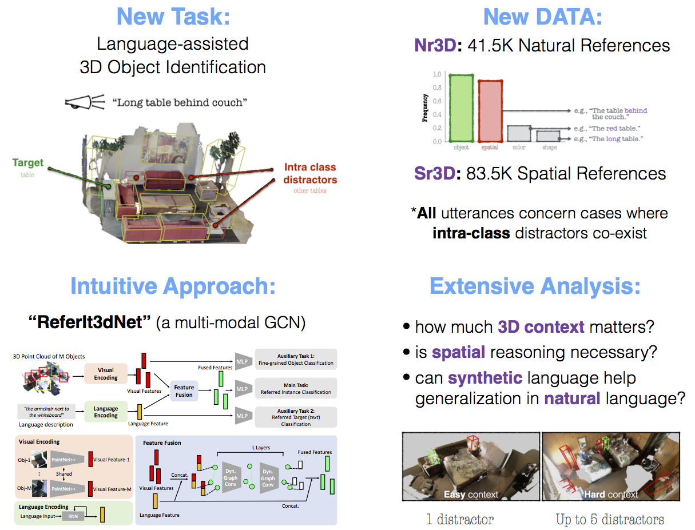
Abstract
In this work we study the problem of using referential language to identify common objects in real-world 3D scenes. We focus on a challenging setup where the referred object belongs to a fine-grained object class and the underlying scene contains multiple object instances of that class. Due to the scarcity and unsuitability of existent 3D-oriented linguistic resources for this task, we first develop two large-scale and complementary visio-linguistic datasets: i) Sr3D, which contains 83.5K template-based utterances leveraging spatial relations among fine-grained object classes to localize a referred object in a scene, and ii) Nr3D which contains 41.5K natural, free-form, utterances collected by deploying a 2-player object reference game in 3D scenes. Using utterances of either datasets, human listeners can recognize the referred object with high (>86%, 92% resp.) accuracy. By tapping on this data, we develop novel neural listeners that can comprehend object-centric natural language and identify the referred object directly in a 3D scene. Our key technical contribution is designing an approach for combining linguistic and geometric information (in the form of 3D point clouds) and creating multi-modal (3D) neural listeners. We also show that architectures which promote object-to-object communication via graph neural networks outperform less context-aware alternatives, and that fine-grained object classification is a bottleneck for language-assisted 3D object identification.
DeformSyncNet: Deformation Transfer via Synchronized Shape Deformation Spaces
Conference Paper SIGGRAPH Asia, 2020, Virtual.
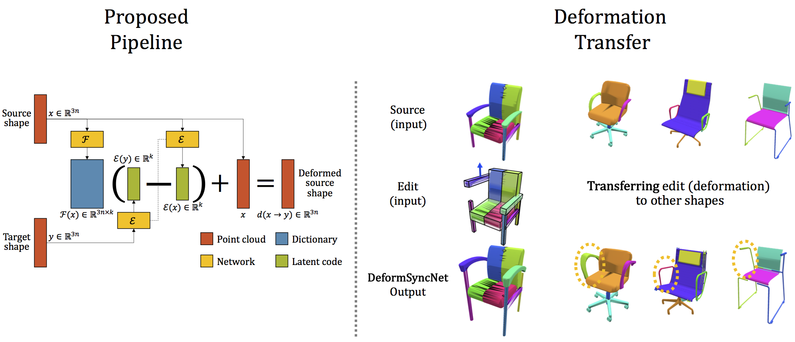
Abstract
Shape deformation is an important component in any geometry processing toolbox. The goal is to enable intuitive deformations of single or multiple shapes, or to transfer example deformations to new shapes, while preserving the plausibility of the deformed shape(s). Existing approaches assume access to point-level or part-level correspondence, or establish them in a preprocessing phase, thus limiting the scope and generality of such approaches. We propose DeformSyncNet, a new approach that allows consistent and synchronized shape deformations, without requiring explicit correspondence information. Technically, we achieve this by encoding deformations into a class-specific idealized latent space, while decoding them into an individual, model-specific linear deformation action space, operating directly in 3D. The underlying encoding and decoding is performed by specialized (jointly trained) neural networks. By design, the inductive bias of our networks results in a deformation space with several desirable properties, such as path invariance across different deformation pathways, which are then also approximately preserved in real space. We qualitatively and quantitatively evaluate our framework against multiple alternative approaches and demonstrate improved performance.Towards a Principled Evaluation of Likability for Machine-Generated Art
Workshop PaperConference on Neural Information Processing Systems (NeurIPS), Machine Learning for Creativity and Design Workshop, 2019, Montréal.

Abstract
Creativity is a cornerstone of human intelligence and perhaps its most complex aspect. Currently, an increasing number of visual artists and fashion designers is experimenting with Machine-Generated (MG) art. It is thus interesting to understand how such experts perceive these novel art forms. For instance, do painters actually like MG paintings? Can they tell them apart from human-made ones? In this preliminary study we collect and analyze responses on such questions from various contemporary artists and compare them to those given by non-experts. Our analysis highlights the importance of considering artists’ opinion when evaluating machine generated art.
ShapeGlot: Learning Language for Shape Differentiation
Conference Paper International Conference on Computer Vision, 2019, Seoul.
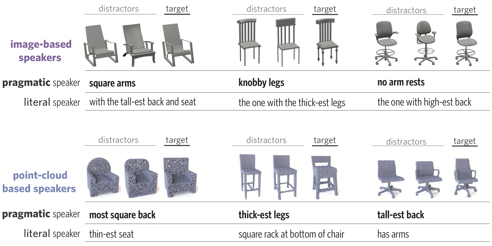
Abstract
People understand visual objects in terms of parts and their relations. Language for referring to objects can reflect this structure, allowing us to indicate fine-grained shape differences. In this work we focus on grounding referential language in the shape of common objects. We first build a large scale, carefully controlled dataset of human utterances that each refer to a 2D rendering of a 3D CAD model within a set of shape-wise similar alternatives. Using this dataset, we develop neural language understanding and production models that vary in their grounding (pure 3D forms via point-clouds vs. rendered 2D images), the degree of pragmatic reasoning captured (e.g. speakers that reason about a listener or not), and the neural architecture (e.g. with or without attention). We find models that perform well with both synthetic and human partners, and with held out utterances and objects. We also find that these models have surprisingly strong generalization capacity to novel object classes (e.g. transfer from training on chairs to test on lamps), as well as to real images drawn from furniture catalogs. Lesion studies suggest that the neural listeners depend heavily on part-related words and associate these words correctly with visual parts of objects (without any explicit training on object parts), and that transfer to novel classes is most successful when known part-words are available. This work illustrates a practical approach to language grounding, and provides a case study in the relationship between object shape and linguistic structure when it comes to object differentiation.
OperatorNet: Recovering 3D Shapes From Difference Operators
Conference PaperInternational Conference on Computer Vision, 2019, Seoul.
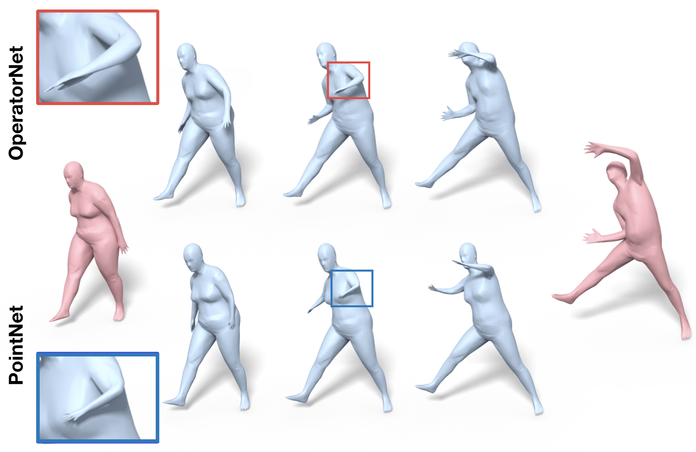
Abstract
This paper proposes a learning-based framework for reconstructing 3D shapes from functional operators, compactly encoded as small-sized matrices. To this end we introduce a novel neural architecture, called OperatorNet , which takes as input a set of linear operators representing a shape and produces its 3D embedding. We demonstrate that this approach significantly outperforms previous purely geometric methods for the same problem. Furthermore, we introduce a novel functional operator, which encodes the extrinsic or pose-dependent shape information, and thus complements purely intrinsic pose-oblivious operators, such as the classical Laplacian. Coupled with this novel operator, our reconstruction network achieves very high reconstruction accuracy, even in the presence of incomplete information about a shape, given a soft or functional map expressed in a reduced basis. Finally, we demonstrate that the multiplicative functional algebra enjoyed by these operators can be used to synthesize entirely new unseen shapes, in the context of shape interpolation and shape analogy applications.
Composite Shape Modeling via Latent Space Factorization
Conference PaperInternational Conference on Computer Vision, 2019, Seoul.
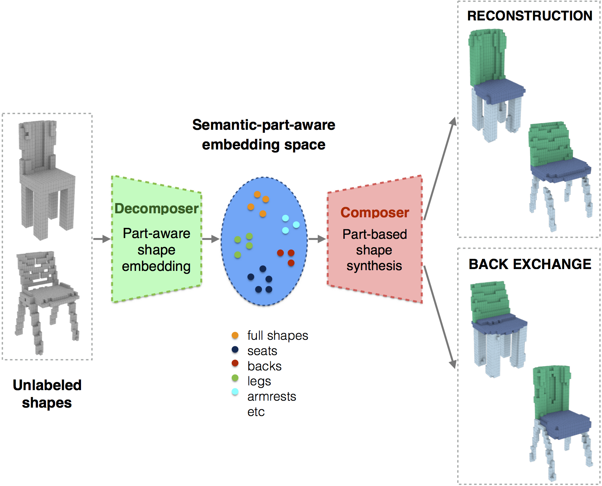
Abstract
We present a novel neural network architecture, termed Decomposer-Composer, for semantic structure-aware 3D shape modeling. Our method utilizes an auto-encoder-based pipeline and produces a novel factorized shape embedding space, where the semantic structure of the shape collection translates into a data-dependent sub-space factorization, and where shape composition and decomposition become simple linear operations on the embedding coordinates. We further propose to model shape assembly using an explicit learned part deformation module, which utilizes a 3D spatial transformer network to perform an in-network volumetric grid deformation, and which allows us to train the whole system end-to-end. The resulting network allows us to perform part-level shape manipulation, unattainable by existing approaches. Our extensive ablation study, comparison to baseline methods and qualitative analysis demonstrate the improved performance of the proposed method.
Limit Shapes – A Tool for Understanding Shape Differences and Variability in 3D Model Collections
Conference Paper Eurographics Symposium on Geometry Processing, 2019, Milan.
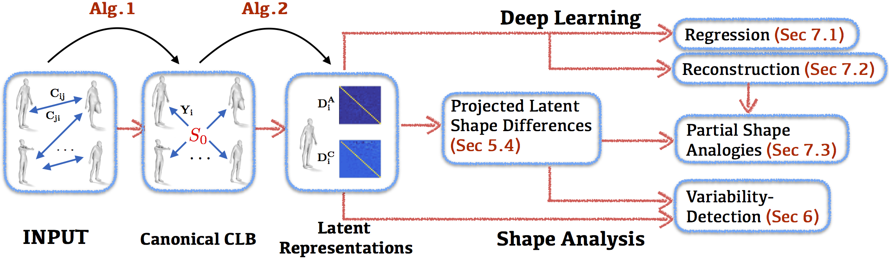
Abstract
We propose a novel construction for extracting a central or limit shape in a shape collection, connected via a functional map network. Our approach is based on enriching the latent space induced by a functional map network with an additional natural metric structure. We call this shape-like dual object the limit shape and show that its construction avoids many of the biases introduced by selecting a fixed base shape or template. We also show that shape differences between real shapes and the limit shape can be computed and characterize the unique properties of each shape in a collection – leading to a compact and rich shape representation. We demonstrate the utility of this representation in a range of shape analysis tasks, including improving functional maps in difficult situations through the mediation of limit shapes, understanding and visualizing the variability within and across different shape classes, and several others. In this way, our analysis sheds light on the missing geometric structure in previously used latent functional spaces, demonstrates how these can be addressed and finally enables a compact and meaningful shape representation useful in a variety of practical applications.
Learning Representations and Generative Models for 3D Point Clouds [Oral]
Conference Paper 35th International Conference on Machine Learning, 2018, Stockholm.
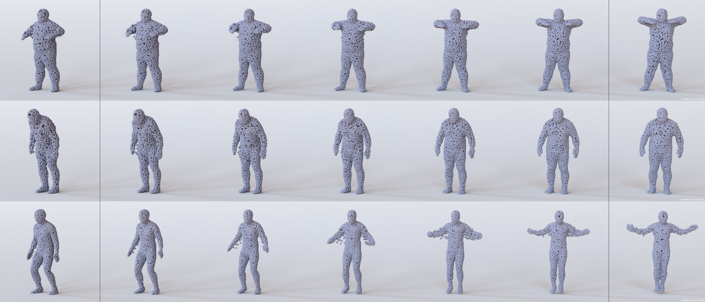
Abstract
Three-dimensional geometric data offer an excellent domain for studying representation learning and generative modeling. In this paper, we look at geometric data represented as point clouds. We introduce a deep AutoEncoder (AE) network with state-of-the-art reconstruction quality and generalization ability. The learned representations outperform existing methods on 3D recognition tasks and enable shape editing via simple algebraic manipulations, such as semantic part editing, shape analogies and shape interpolation, as well as shape completion. We perform a thorough study of different generative models including GANs operating on the raw point clouds, significantly improved GANs trained in the fixed latent space of our AEs, and Gaussian Mixture Models (GMMs). To quantitatively evaluate generative models we introduce measures of sample fidelity and diversity based on matchings between sets of point clouds. Interestingly, our evaluation of generalization, fidelity and diversity reveals that GMMs trained in the latent space of our AEs yield the best results overall.
Latent-space GANs for 3D Point Clouds
Workshop Paper 34th International Conference on Machine Learning, Implicit Models Workshop, 2017, Sydney.
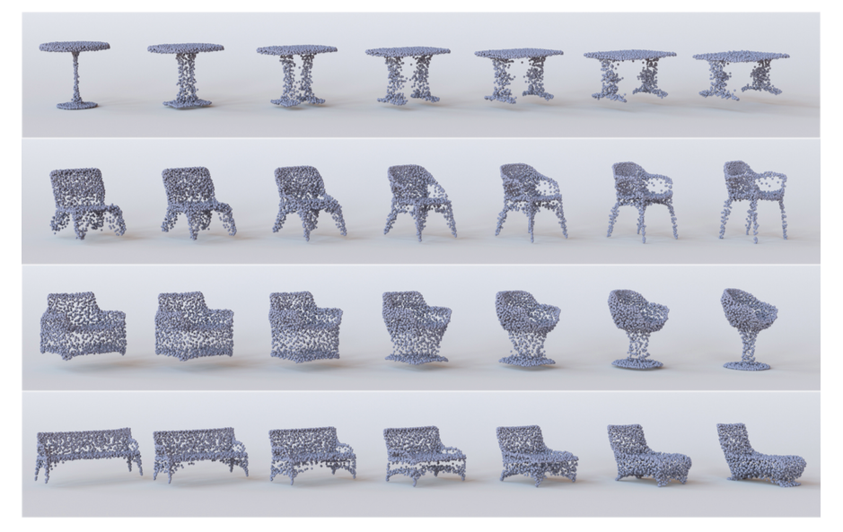
Abstract
Three dimensional geometric data offer an excellent domain for studying representation learning and generative modeling. In this paper, we look at geometric data represented as point clouds. We introduce a deep autoencoder (AE) network for point-clouds, which outperforms the state of the art in 3D recognition tasks. We also design GAN architectures to generate novel point clouds. Most importantly, we show that by training the GAN in the latent space learned by the AE, we greatly boost the GAN’s data-generating capacity, creating significantly more diverse and realistic geometries, with far simpler architectures. The expressive power of our learned embedding, obtained without human supervision, enables basic shape editing applications via simple algebraic manipulations, such as semantic part editing and shape interpolation.
Stochastic Gradient Descent in Theory and Practice
Thesis Theory Qualifying Exam CS PhD Program, 2016, Stanford.
Abstract
Stochastic gradient descent (SGD) is the most widely used optimization method in the machine learning community. Researchers in both academia and industry have put considerable effort to optimize SGD’s runtime performance and to develop a theoretical framework for its empirical success. For example, recent advancements in deep neural networks have been largely achieved because, surprisingly, SGD has been found adequate to train them. Here we present three works highlighting desirable properties of SGD. We start with examples of experimental evidence for SGD’s efficacy in training deep and recurrent neural networks and the important role of acceleration and initialization. We then turn into theoretical work connecting a model’s trainability by SGD to its generalization. And, finally, we discuss a theoretical analysis explaining the dynamics behind the recently introduced versions of asynchronously executed SGD
Two-Locus Association Mapping in Subquadratic Time [Oral]
Conference Paper Proceedings of the 17th ACM SIGKDD International Conference on Knowledge Discovery and Data Mining, 2011, San Diego.
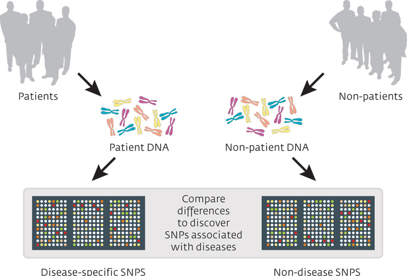
Abstract
Genome-wide association studies (GWAS) have not been able to discover strong associations between many complex human diseases and single genetic loci. Mapping these phenotypes to pairs of genetic loci is hindered by the huge number of candidates leading to enormous computational and statistical problems. In GWAS on single nucleotide polymorphisms (SNPs), one has to consider in the order of 10^10 to 10^14 pairs, which is infeasible in practice. In this article, we give the first algorithm for 2-locus genome-wide association studies that is subquadratic in the number, n, of SNPs. The running time of our algorithm is data-dependent, but large experiments over real genomic data suggest that it scales empirically as n^{3/2}. As a result, our algorithm can easily cope with n ~ 10^7, i.e., it can efficiently search all pairs of SNPs in the human genome.